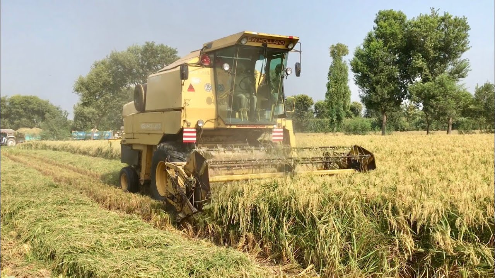

STFAS
is guided by several purposes such as using sustainable sources of
energy and utilising them to their fullest and also replacingmanual
field work by cutting-edge technology while still making it affordable
to the masses.
Reducing manual Field work
A large net of moisture sensors will be laid across the farm which
constantly send data to the unified STFAS servers. This can be accessed
by the farm owner using Apps. They can control water supply using
automated pipes submerged that spray water over the farms

Automated Vehicles
Similar to the idea of a Tesla , this applies to all the vehicles used
in agriculture.Tractors with sowers attached would be used wirelessly
with AI guiding it. At the season of harvest , Automatic Combine
harvesters will harvest the field with ease
The Power Source
Every appliance will have a solar panel which will be used seamlessly
while working on the field to charge and work on the go. The net of
sensors will also be powered using waterproof cables by solar panels.